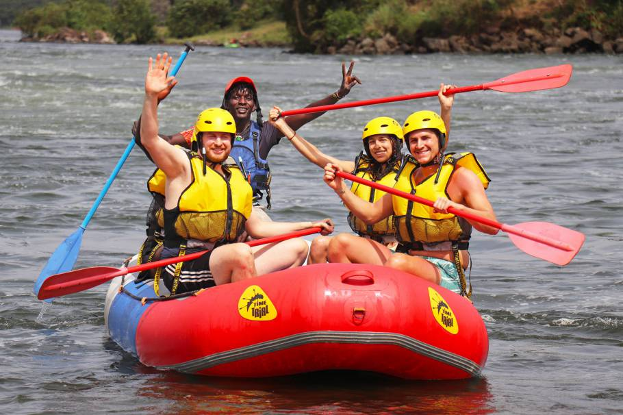

Welcome to Splash White Water Rafting, where adventure meets nature in the most exhilarating way. Our experienced guides are dedicated to providing you with safe, thrilling, and unforgettable rafting experiences on some of the most beautiful rivers in Malawi.
Whether you're a first-time rafter or an experienced adventurer, we have trips tailored to all skill levels. Our commitment to safety, environmental stewardship, and customer satisfaction sets us apart as Malawi's premier rafting destination.
History
Splash White Water Rafting was established in 2015 with a vision to share the breathtaking beauty of Malawi's rivers with adventure seekers from around the world. What began as a small family operation has grown into one of the region's most respected rafting companies.

Our dedicated team of rafting guides
Founded by siblings Zebron, Angel, and Destiny Sichali, Splash White Water Rafting began with a simple passion for adventure and a deep respect for nature. Their operation is based along the scenic Songwe River in the Karonga District of Northern Malawi, a region that shares a vibrant border with Tanzania. What started as their small family operation has grown into a premier rafting destination, guiding thousands of visitors through thrilling river experiences each year. This growth is a testament to their commitment to safety, exceptional guiding, and the unique beauty of the river. They take great pride in offering a range of experiences that showcase the stunning landscapes of their home district, from gentle flows to exhilarating rapids. A core part of their mission is to foster a conservation ethic, ensuring visitors leave with a deeper appreciation for the Songwe River's ecosystem. The original family values of personal service and adventurous spirit continue to be the heart of the company as it welcomes adventurers from across the globe.
Our Mission
Our mission is to provide safe, exciting, and unforgettable white water rafting experiences for adventurers of all levels while preserving the natural beauty of our rivers. We believe in sustainable tourism practices that benefit both our guests and the local environment.
We are committed to:
Providing the highest safety standards for all our rafting trips
Employing and training local guides to international standards
Promoting environmental awareness and river conservation
Creating memorable experiences that connect people with nature
Supporting local communities through responsible tourism
Adventure Awaits You
Explore our diverse range of rafting experiences, from gentle scenic floats to adrenaline-pumping white water challenges. Each trip is carefully designed to showcase the unique beauty of Malawi's rivers while providing the perfect level of excitement for your skill level.
We offer hapinessEnjoying the WaterHalf Day AdventureRapid RunnersSongwe River Where You Can Enjoy Life
Safety First
Your safety is our top priority. All our guides are certified in wilderness first aid and river rescue techniques. We provide top-quality safety equipment including helmets, life jackets, and wetsuits. Before each trip, we conduct comprehensive safety briefings to ensure everyone understands proper techniques and procedures.
We continuously monitor river conditions and weather forecasts to make informed decisions about trip safety. Our safety record is exemplary, with thousands of satisfied customers enjoying thrilling yet secure adventures with us.